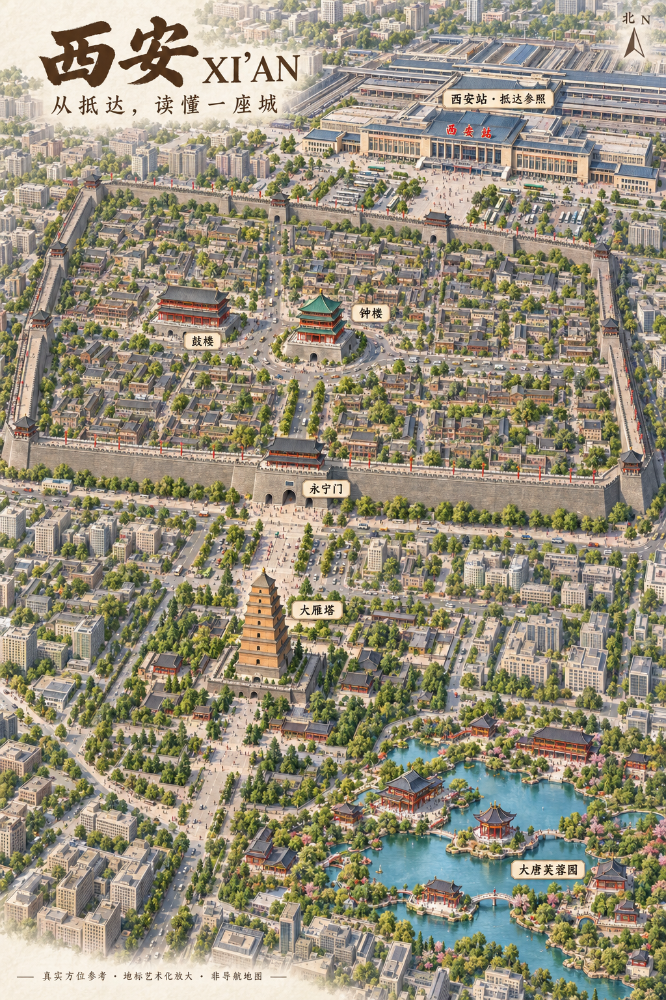

先找到你抵达的车站
西安站在钟楼东北方向。本图突出西安站；西安北站是另一座车站，可在地理依据页查看，请按实际车票区分。
XI’AN / 城市旅游理解图
以西安站认识抵达的位置，以钟楼辨认城区方向，
由城墙内的钟鼓楼，认识城南的雁塔与芙蓉园。

西安站在钟楼东北方向。本图突出西安站；西安北站是另一座车站，可在地理依据页查看，请按实际车票区分。
鼓楼在钟楼西侧，永宁门在南侧。结合城墙内外关系，再认识城南的雁塔与芙蓉园。
大雁塔在钟楼东南方向，芙蓉园又在大雁塔东南侧。画面有透视与局部放大，实际方位请结合地理依据阅读。
选择名称，查看它在真实城市中的位置。
本图由用户提供，已原样保存；具体生成工具、模型版本和授权范围待核实。此前四次内置生图请求均报网络错误，这张上传图不被记录为那些请求的成功返回。
画面包含六个核心标志，西安站作为抵达参照，钟楼作为城区参照。名称对应已有地点档案；建筑外形、城墙轮廓、街道和距离比例尚未逐项核验。
方位可读性仍需检查：指北针接近竖直，而景观使用透视，大雁塔视觉上偏左，容易误读其与钟楼的关系。不能只用图像横坐标判断透视空间；真实关系是大雁塔在钟楼东南方向。地理依据页保留 13 个参考点的坐标、来源与直线距离比较。
本图是视觉样稿，不作导航；图中车站、建筑和片区经过艺术化放大。地点资料核对日期：2026-09-14。